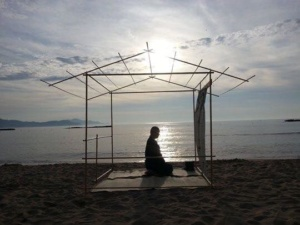
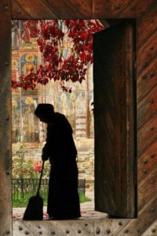

Nova doba se vedno zgodi na pogoriščih včerajšnjega dne, ki vedno že piše zgodovino. Vsakdo bi rad lahkotno, kar se da preskočil viharna obdobja, ki so potrebna za finiširanje nove forme. Čestokrat bi človek rad prehitel samega sebe z strinjanjem, prerastlostjo nečesa kar je bila do včeraj navada, rutina, vsakdanjost, tradicija, sistem ali ustaljen način. Sploh je v modi brisanje vzorcev, v resnici pa gre za preraščanje sebičnosti.
Do nedavnega so starši gradili velike hiše, ker so razmišljali o vsaj enem rodu naprej ne le o času lastnega preživetja. Nov čas pa kot, da razlikuje le dve skrajnosti. Pa ravno med njima še vedno teče večinsko življenje. Ali se sanja o tisoč in eni stvari, ki jo potrebuješ, da lahko doživiš pester in zanimiv dan. Ali kot, da ne potrebuješ niti strehe nad glavo, da bi bil srečen ali vsaj začel pogosteje ovohavati njeno esenco. Povedo ti,da si človek bolečino, samoto in vse sorte revščine zadaja sam, kar iz večih nivojev sicer še sama verjamem. Vem pa tudi, da za tovrstno spoznanje potrebujem posebne pogoje.
Veliko ljudi je razočaranih nad izkoriščevalnimi sistemi politike dela in politike vsesplošnosti.Mnogo ljudi kratko malo ne znajde v času brez stabilnosti zaposlitve ali celo brez zaposlitve, da je večini težko ali nemogoče zgraditi hišo za svojo družino ali priskrbeti stanovanje. Panika je lahko tako velika, da si izmišljamo nove načine kako s tem preživeti, ob zavedanju, da so tvoji starši ali stari starši imeli boljše pogoje človeške dostojanstvenosti.
Najbolj fascinantni primeri so, da starši zgradijo hišo, da se mlada družina lahko le vseli. Nikomur od mladih se ni treba ukvarjati z najbolj preprosto realnostjo kako spraviti pod streho novo hišo in kako zaslužiti denar za zadnjo in najdražjo fazo gradnje. Nekateri mladi veseli vzamejo kar so dobili od staršev in sproščeno brez bremen kreditov in štednje živijo svoja življenja. Najde se tudi kdo, ki v takem položaju pregreto razlaga o duhovnem življenju in o popolnem nesmislu materialnega sveta. Modrujejo celo o življenju prav tistih, ki so zgradili njegov dom, da lahko v miru razmišlja o drugih smislih, in lahko bi o lastnem ustvarjanju.
Srečevanje z Novo dobo je polno različnih ekstremov ob tem, ko se človeška pamet v abstraktnih razlagah zvija kot kača, da bi lahko rešila svoje življenje po starem. Prilagoditev in ujetje ravnotežja v propadlih sistemih gospodarstva in družbe je dolgotrajen proces, ki pogoltne mnoštva družin in posameznikov.
V prihodnje se bomo z gotovostjo morali zelo hitro marsičesa naučiti, eni- da nič ni tako kot je videti, drugi- kaj sploh je in kako preprosta in vseplastna in prava duhovnost, tretji- kako se ob postopnem delovanju tudi česa naučiš, da se lahko zaposliš in zaslužiš denar za preživetje svoje družine, brez, da bi bentil nad vsem kar se dogaja, iskal krivce povsod le za lastnim pragom ne.
Tudi moj dom je Zapuščina starih staršev, ki ga s trudom in včasih z muko obnavljam in popravljam, da mi nudi zavetje pred ekstremi zaresnega vremena ali v abstraktnih prispodobah različnih življenjskih situacij. Vsekakor mi daje občutek, da sem nekaj dobila v dar, da za to skrbim in gojim spomin in občutek domačnosti, in priznam včasih je prekleto hudo popravljati. Zdavnaj sem se spravila z dejstvom in pomenom odgovornosti do tega, kar sem in kje sem, da v šoli nisem bila med marljivimi niti odličnjaki. Da posledično in natanko zaradi tega nisem mogla zaradi takratnih situacij terjati lagodnega življenja, ki bi mi ga omogočala odlično plačana služba. Spomnim se časa, ko bi se naj z veseljem do učenja kaj naučila ali vsaj prepisala za boljši uspeh. Veselja do učenja ni bilo od nikoder in mnogo bolj so me okupirale druge stvari katerim sem bila izpostavljena, včasih lepe včasih sploh ne.
Iz vsega kar je bilo, je živahno življenje, da sem lahko kar sem, in ob vsem vem, da je prav tako. Všeč ni je, da mirne vesti in z veseljem lahko spoštujem in občudujem druge ljudi. Si privoščim izraziti mnenja in ob tem lahko lepo vidim kako se Svet vrti.
Usklajevanje preteklosti z jutrišnjim dnem je naloga človeka, tistega, ki službo išče ali tistega, ki jo ima. Pravo gurujstvo je delo, ki vključuje navidezno askezo, ki je sicer le tankočutna in prostovoljna izbira med obiljem vsega dosegljivega in med tem kar zmorem uporabiti in rabiti. Univerzum je še zmeraj ustrojen tako, da se tudi človeška samozavest izgradi z delo-vanjem.


Aurelija Z.M.
← Nazaj na članke